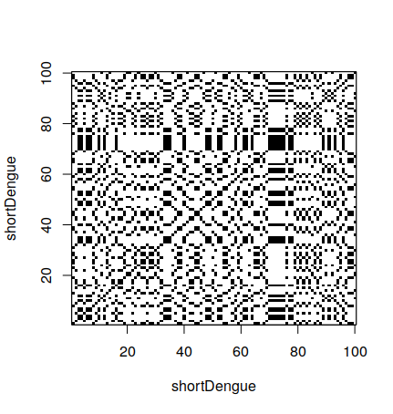

1.3 Comparing Gene Sequences 2
1 Context
1.1 Sequences
DNA is composed of four bases adenine (A), guanine (G), cytosine (C) and thymine (T). The bases of DNA determines the RNA it can encode, and therefore the proteins in can enduce production of.

Given two sequences, how can we determine in which aspects they are different or similar? Last time we started studying dot plots.
2 Dot plots
2.1 What is a dot plot
A dot plot is a graphical method for comparing two biological sequences and identifying regions of close similarity after sequence alignment. It is one of the oldest techniquest for comparing base sequences.
The technique is the following. Build a graph with two axis, with one gene sequence in each axis. In the position (i,j) put a black dot if the base in the position i of the first sequence is the same as the base in the position j in the second sequence. Othewise, put a white dot.
2.2 How to make a dot plot
In R, is is possible to make a dot plot using the seqinr library. To do a dot plot for a small part of the dengue gene:
> shortDengue <- dengue[1:100]
> dotPlot(shortDengue,shortDengue)Why a small section? Dot plots are expensive to calculate. For 100 bases, one needs 10,000 operations. For 10,000 bases, one needs 100,000,000 operations. It grows very fast, so it can take a long time to calculate.

2.3 Comparing the full sequence
When comparing the full dengue sequence with itself, the result is the following. It took around 20 minutes to calculate in my computer, so it is not practical to do during classes.
It also shows another limitation of dot plots – when they are very large, it is difficult to interpret the result, since lines are difficult to see.
2.4 Creating a dot plot 1
A sequence with itself.

2.5 Comparing two sequences
Besides comparing a sequence with itself, we can compare two different sequences:
> shortZika <- zika[1:100]
> dotPlot(shortDengue,shortZika)
2.6 Creating a dot plot 2
A sequence with another sequence.
3 Alignment
3.1 Sequence alignment
An important question is how much two sequences are similar. To quantify similarity, it is necessary to align the two sequences, and then you can calculate a similarity score based on the alignment.
There are two types of alignment in general. A global alignment is an alignment of the full length of two sequences, for example, of two protein sequences or of two DNA sequences. A local alignment is an alignment of part of one sequence to part of another sequence.
3.2 Sequence transformations
When comparing sequences, we consider possible events that may happen in the sequences. For example, base deletion or base insertion. This means we may introduce gaps in the sequences. We represent gaps with. -.
For example, when comparing the sequences GAATTC and GATTA, we may want to also consider:
G A A T T C
G A T T - Aand
G A A T T C
G A - T T A3.3 Evaluating alignments
To evaluate the alignment, we give points to pairings, for example:
- Match: 2 points
- Mismatch: -1 points
- Gap: -2 points
G A A T T C
G A T T - A
2 2 -1 2 -2 -1 = 2and
G A A T T C
G A - T T A
2 2 -2 2 2 -1 = 53.4 Aligning sequences
Find the best alignment for GATTA and CATA. Where should the gap go?
G A T T A
- C A T A
C - A T A
C A - T A
C A T - A
C A T A -4 Alignment using R
4.1 Matching matrix
We can use R to determine the best pairwise alignment between two sequences, using the Biostrings library. In order to do so, we first tell how we want to evaluate matches and mismatches. This uses the nucleotideSubstitutionMatrix:
> library(Biostrings)
> sigma <- nucleotideSubstitutionMatrix(match = 2, mismatch = -1, baseOnly = TRUE)
> sigma
A C G T
A 2 -1 -1 -1
C -1 2 -1 -1
G -1 -1 2 -1
T -1 -1 -1 24.2 Finding the best alignment
To calculate the best alignment, we use the function pairwiseAlignment, which takes the matrix above as a parameter. This uses the Needleman-Wunch algorithm.
> s1 <- "GAATTC"
> s2 <- "GATTA"
> pairwiseAlignment(s1, s2, substitutionMatrix = sigma, gapOpening = -8, gapExtension = -2, scoreOnly = FALSE)
Global Pairwise Alignment (1 of 1)
pattern: GAATTC
subject: GA-TTA
score: -34.3 Gap evaluation
The function had two extra parameters, gapOpening and gapExtension. These correspond to how we evaluate gaps:
gapOpeningis the value for the first space in the gapgapExtensionis the value for the subsequent spaces in the gap
This is because a single gap of two nucleotides
4.4 Gap evaluation
For example, if we give the values -8 and -2 for gap openins and extensions, if we compare ATAG and AA, we have:
A T A G
A - A -
2 -8 2 -8 = -12and
A T A G
A A - -
2 -2 -8 -2 = -104.5 Aligning the exercise in R
In the example we did manually:
> s1 <- "GATTA"
> s2 <- "CATA"
> pairwiseAlignment(s1, s2, substitutionMatrix = sigma, gapOpening = -8, gapExtension = -2, scoreOnly = FALSE)
Global PairwiseAlignmentsSingleSubject (1 of 1)
pattern: GATTA
subject: CAT-A
score: -5 5 Next
5.1 Next lectures
In the next two lectures we will study:
- Producing dot plots
- Aligning sequences using R